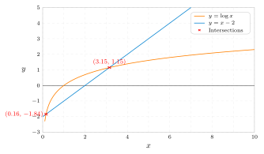
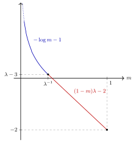

Example 5.2.4 . 5.2.2 again. We will continue to use the same notations.
Recall that in example 1.8.9 and example 3.1.14 , we constructed two $S^1$-invariant functions in $\mathrm{PSH}(X,\omega )$.
We begin with the function $\varphi $ in example 1.8.9 . Recall that
\[ \varphi (z)=\log \frac{|z|^2}{|z|^2+1} \]
for $z\in \mathbb {C}$. The function $f\colon \mathbb {R}\rightarrow \mathbb {R}$ in (5.16 ) is therefore
\[ f(n)=\log \frac{\mathrm{e}^{n}}{1+\mathrm{e}^{n}}. \]
Therefore, $F_{\varphi }\colon \mathbb {R}\rightarrow \mathbb {R}$ is
\[ F_{\varphi }(n)=n. \]
Correspondingly, $G_{\varphi }\colon \mathbb {R}\rightarrow \mathbb {R}$ is
\[ G_{\varphi }(m)= \begin{cases} 0,& \textup{if } m=1;\\ \infty ,& \textup{otherwise}. \end{cases} \]
Similarly, if $\psi $ denotes the function in example 3.1.14 , then the function $f$ in (5.16 ) is
\[ f(n)= \begin{cases} -\log \left(\mathrm{e}^ n+1 \right)+(-\log (-n))\lor (n+2),& \textup{if } n<-\log 2;\\ 2+\log \frac{\mathrm{e}^{n}}{1+\mathrm{e}^{n}},& \textup{otherwise}. \end{cases} \]
Therefore,
\[ F_{\psi }(n)= \begin{cases} (-\log (-n))\lor (n+2),& \textup{if } n<-\log 2;\\ 2+n,& \textup{otherwise}. \end{cases} \]
The Legendre transform is tricky to compute. Let $\lambda $ be the large solution of $\log x=x-2$. So $\lambda \approx 3.146$. The smaller solution is around $0.159<\log 2\approx 0.693$. It might be helpful to have a look at the poorly drawn picture 5.2 .

5.2 The graphs of $\log x$ and $x-2$.It is immediate that $G_{\psi }(m)=\infty $ unless $m\in [0,1]$. Let us assume that $m\in [0,1]$. Then
\[ \begin{aligned} G_{\psi }(m)=& \sup _{n\in \mathbb {R}} \left( mn-F_{\psi }(n)\right)\\ =& \sup _{n<-\log 2} \left( mn-(-\log (-n))\lor (n+2)\right) \lor \sup _{n\geq -\log 2} (mn-n-2)\\ =& \sup _{n>\log 2} \left( -mn+(\log n)\land (n-2)\right) \lor \left((1-m)\log 2-2\right). \end{aligned} \]
Let us focus on the first part, which can be decomposed further into
\[ \begin{aligned} & \sup _{n>\log 2} \left( -mn+(\log n)\land (n-2)\right)\\ =& \sup _{n\in \left(\log 2,\lambda \right]} (n-2-mn) \lor \sup _{n>\lambda } (\log n-mn)\\ =& \left( (1-m)\lambda -2 \right) \lor \sup _{n>\lambda } \left(\log n-mn\right). \end{aligned} \]
The latter part can be computed easily:
\[ \sup _{n>\lambda } \left(\log n-mn\right)= \begin{cases} -\log m-1,& \textup{if } m\in \left(0,\lambda ^{-1}\right];\\ \log \lambda -m\lambda ,& \textup{if }m\in \left(\lambda ^{-1},1\right]. \end{cases} \]
Putting everything together, we find
\[ G_{\psi }(m)= \begin{cases} (-\log m-1)\lor \left( (1-m)\lambda -2 \right) ,& \textup{if } m\in \left(0,\lambda ^{-1}\right];\\ (\log \lambda -m\lambda )\lor \left( (1-m)\lambda -2 \right),& \textup{if }m\in \left(\lambda ^{-1},1\right]. \end{cases} \]
This can be further simplified, the final result is
\[ G_{\psi }(m)= \begin{cases} -\log m-1 ,& \textup{if } m\in \left(0,\lambda ^{-1}\right];\\ (1-m)\lambda -2 ,& \textup{if }m\in \left(\lambda ^{-1},1\right];\\ \infty ,& \textup{otherwise}. \end{cases} \]
The graph of $G_{\psi }$ on $(0,1]$ is sketched in 5.3 .

5.3 The graph of $G_{\psi }$ on $(0,1]$.